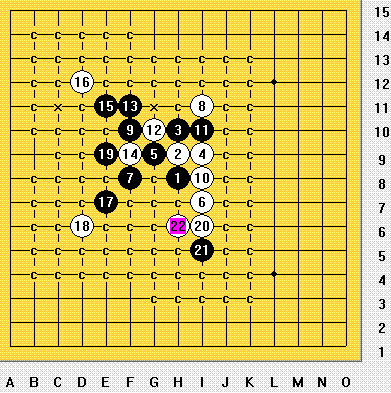
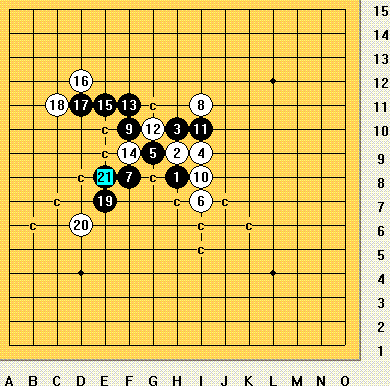
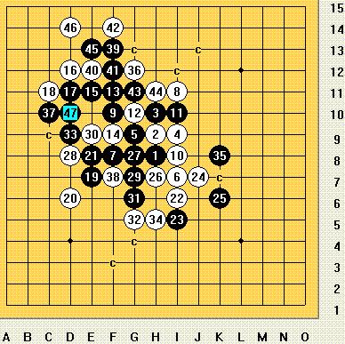

见《连珠五子棋入门》P117-184
22手是胜败逆转的妙手，已成必胜形~
连珠战神
联众：连珠战神[51709496] 中 快2 棋1
QQ:12126430 有禁 3手交换 5手2打 1
Email:rifmini@163.com
个人U盘：http://tel5.800disk.com/?rifmini
下图的17手的着法已终结~~

参考谱：

连珠战神
联众：连珠战神[51709496] 中 快2 棋1
QQ：12126430 有禁 3手交换 5手2打 1
Email： rifmini@163.com
个人U盘：http://tel5.800disk.com/?rifmini
大师们你们好.我常用五子棋宝典打谱.不知怎样上传图片.我的燕阵黑17下在C11 黑而下在D10这样活三.很快就赢了.不知错在那里.我这样下也有定式吗.请大家指点一下.还有就是怎么下传图片
请查看此贴：帮助：如何在帖子中插入上传图片
建议使用爱五子棋打谱软件，本站软件版块有。